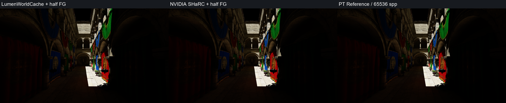
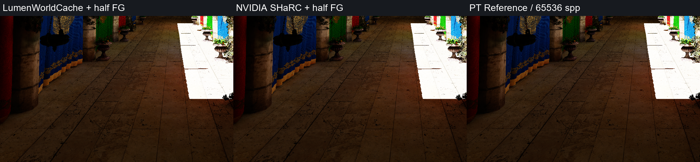
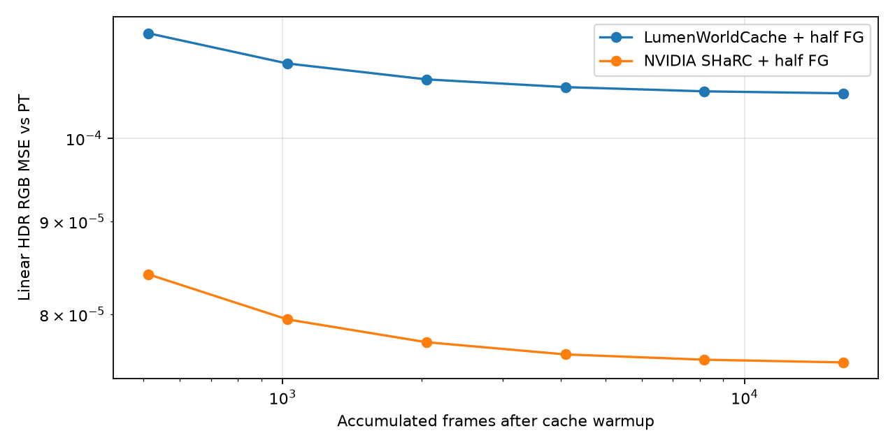
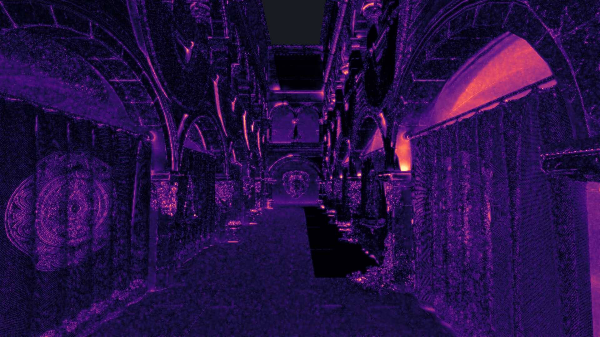
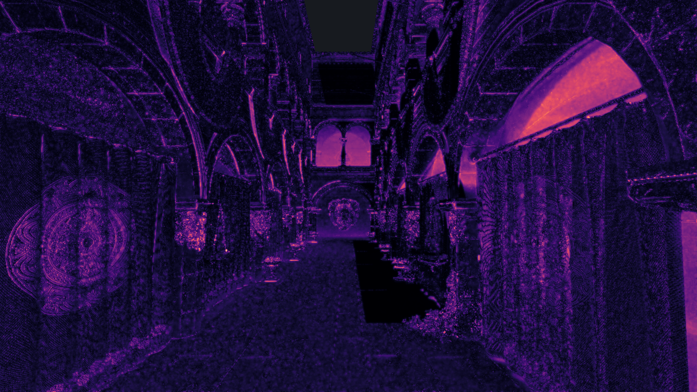

旧配置报告，已被替代。此版额外对齐了预算、容量及历史等参数，不符合后续“仅调整格子大小”的要求。请查看官方配置对比。旧数据仅作历史记录。
相机 (-9,1.6,0) 看向 (8,2.5,0)，方向光 (0.3,-1,0.2)、强度 RGB 50，点光关闭。已设为 SponzaLambert 默认灯光，原版 Sponza 不变。1920×1080，相同 Lambert 材质和法线修正。复用 11 月 20 日同灯光/相机的未降噪 PT 65536 spp；两组 GBuffer 法线与参考逐像素一致，两组位置缓冲也完全一致。
两组均为独立缓存＋960×540 FG＋相同深度/法线引导重建＋Accumulate（SingleCompensated）＋统一显示映射。NRD、ReSTIR、RTXDI 关闭，半分辨率采样位置固定。每帧更新路径起点为 240×135，每块 8×8 随机选一个 GBuffer 像素；3 个更新顶点加末端 bootstrap，缓存预热 8192 帧再清空屏幕累积。SHaRC 会按官方缓存重采样提前结束更新，实际追踪数不保证相同。
WorldCache：minCell=0.025、density=20；SHaRC：sceneScale=20、logarithmBase=2、levelBias=2。对应最小边长相同，1/2/4/8/16 米的格子边长分别为 0.05/0.1/0.2/0.4/0.8 米。对可见表面实测，格子边长相同的像素占比为 99.999756%。细微边界差异可能来自位置偏置参与距离计算的时机；不修改官方 SDK。
两边容量均 2²⁰，history=16、stale age=64，无 radiance clamp。WorldCache 核心缓存约 56 MiB；SHaRC 核心缓存含锁缓冲约 44 MiB。两边的哈希冲突处理、法线分桶、历史融合和多跳更新算法保留原实现：WorldCache 用主轴六面法线分桶，SHaRC 默认用法线符号八象限。因此这不是所有缓存行为完全一致的实验。
| 方案 | 累积帧数 | MSE ↓ | HDR-FLIP ↓ | 完整图 GPU ms ↓ | 末次翻倍相对 RGB RMS |
|---|---|---|---|---|---|
| LumenWorldCache + half FG | 16384 | 0.00010586504 | 0.14170 | 1.930 | 0.075% |
| NVIDIA SHaRC + half FG | 16384 | 7.527647e-05 | 0.12850 | 2.142 | 0.077% |
稳定检查：累积翻倍后相对 RGB RMS <0.1%，显示平均变化 <0.25/255，P99 <2/255；至少 16384 帧。GPU 为稳定期 512 帧均值，包含 GBuffer、缓存更新、Resolve、FG、重建、Accumulate 和显示，详细分项见 JSON。MSE 在可见表面 mask 内计算线性 HDR RGB；HDR-FLIP 共同曝光范围、ACES、PPD 67，不是百分比误差。

WorldCache 1080p · SHaRC 1080p · PT 1080p
本视角结果：SHaRC 的 MSE 比 WorldCache 低约 28.9%，HDR-FLIP 低约 9.3%；完整渲染图 GPU 耗时增加约 11.0%（0.212 ms）。这仅代表此静态 SponzaLambert 方向光视角，不能外推到所有场景或动态响应。
统一提亮的柱脚局部图显示，两边都保留了接触暗化；WorldCache 的阴影地面整体较 PT 偏亮，SHaRC 更接近 PT 的地面亮度和柱脚周围的暗化，但仍有局部色调及亮度残差。不能将这次差异全部归因于法线分桶或哈希表，也不能据单张图断言完全没有漏光。
分项 GPU 耗时：缓存更新＋Resolve，WorldCache 为 0.248 ms，SHaRC 为 0.179 ms；半分辨率 FG，WorldCache 为 0.300 ms，SHaRC 为 0.582 ms。SHaRC 更新更快，但查询、短射线保护和缺失回退使 FG 更贵，最终总耗时略高。测量设备 NVIDIA GeForce RTX 5070，驱动 621.01。
验证已完成：Release 插件构建、128 帧 SHaRC 冒烟测试、SHaRC ↔ WorldCache 运行时切换、默认灯光启用状态检查、1080p 两组稳定累积与 512 帧 GPU 计时。缓存读写有有效命中，没有检测到缓存非有限值，导出的 HDR 图像也全部为有限值。窗口交互与 Vulkan 未单独测试。


统一 Magma [0,1]，暗为误差小，亮为误差大，mask 外为深灰。
WorldCache

SHaRC

SHaRC 使用 NVIDIA 官方 1.8.3（4e21b585），CMake 自动下载固定版本，SDK 未修改。执行顺序：GBuffer → SHaRC Update → UAV barrier → 官方 Resolve → UAV barrier → FG Query → Reconstruct → Accumulate → Display。SDK 的缓存重采样和相邻层历史融合启用；材质去调制、方向 SH 编码、responsive lighting 关闭，面向本次 Lambert 对比。
SHaRC 查询只发生在间接命中点，命中返回总出射辐亮度，不重复添加直接光。射线短于格子边长或缓存缺失时继续追踪，最多 31 个查询顶点；WorldCache 仍沿用原来的单次查询，缺失返回零。回退成本计入耗时，画质差异可能同时受缓存与回退策略影响。两边材质、解析光 NEE、环境 miss 与 alpha test 共用 Falcor 桥接。动态图、复杂镜面/透射材质和 Vulkan 本轮未验证。